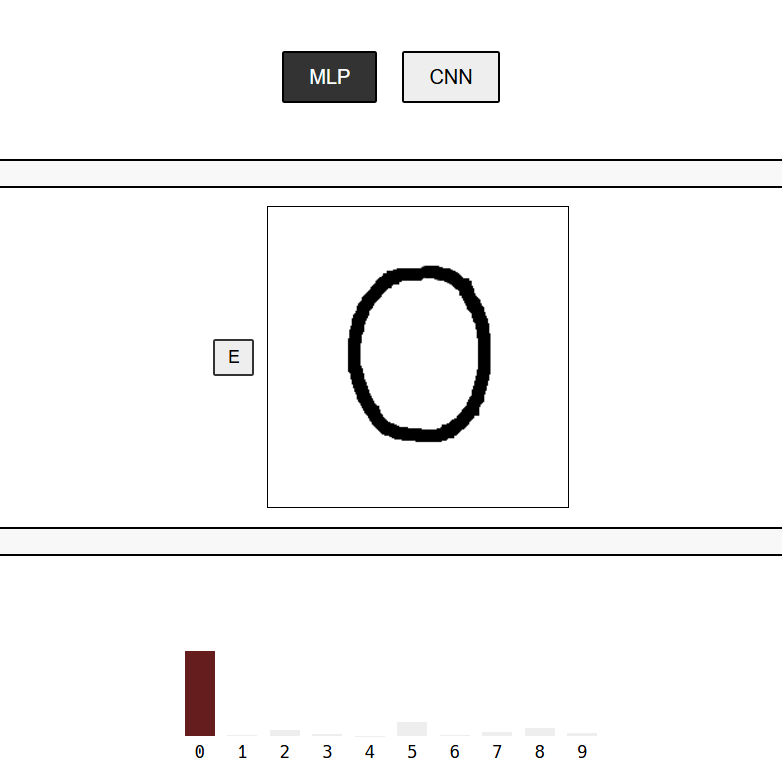

This project implements a handwritten digit recognition system using TinyGrad for model training and WebGPU for real-time inference in the browser. The application features both an MLP (Multi-Layer Perceptron) and CNN (Convolutional Neural Network) model trained on the MNIST dataset, allowing users to draw digits and receive instant predictions with confidence scores.
Try out the MNIST Classifier yourself by clicking here. For more details you can take a look to my GitHub's repository.